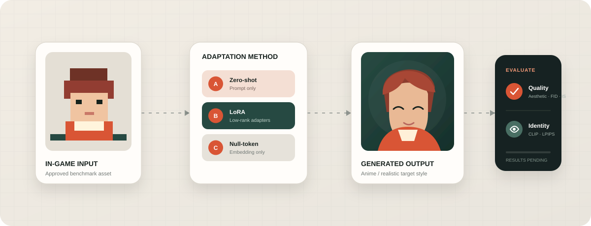

Visual quality
Which model–method pair produces the most coherent images in each target style?
Controlled comparison · Reviewable evidence
A controlled record for comparing how in-game avatars translate into anime and realistic portraits. Protocols and reviewed evidence are public; model weights, inference endpoints, and private data remain offline.

01 / Overview
A polished portrait is not a successful translation if it no longer resembles the source character. The evaluation therefore reports visual quality and identity preservation as separate objectives before combining them.
Which model–method pair produces the most coherent images in each target style?
How consistently do hairstyle, palette, outfit, accessories, and silhouette survive translation?
Do lightweight adaptations improve the quality–identity trade-off enough to justify their cost?
02 / Methods
The training footprint changes; the benchmark split, generation controls, and evaluation path do not.
The frozen base model receives the reference image, a style prompt, and a negative prompt. Its result defines the baseline for any claimed adaptation gain.
Low-rank adapters are trained from input–target–prompt pairs. Base weights stay frozen while a compact adapter learns the desired translation behavior.
The diffusion model and text encoders remain frozen. Only a new token embedding is optimized and prepended to the prompt at inference time.
03 / Protocol
The protocol is versioned before any score becomes public. Every field marked “Pending” must be fixed before the first benchmark release.
Use one versioned benchmark split across all comparable runs.
Keep prompts, seeds, resolution, and inference settings explicit.
Publish aggregate metrics together with representative failures.
Never replace a published result without updating the change log.
Arrows indicate the preferred direction; they do not imply equal metric reliability.
Learned preference estimate for visual appeal and composition.
Distribution distance between target and generated benchmark sets.
Image recognizability and diversity signal for the generated set.
Embedding similarity between the input character and generated image.
Perceptual feature distance between input and generated image.
Quality = 0.5 × Aestheticnorm + 0.3 × exp(−FID / 100) + 0.2 × ISnorm
Identity = 0.6 × CLIPnorm + 0.4 × (1 − LPIPSclamped)
Overall = harmonic mean(Quality, Identity)
Aesthetic and IS are normalized against 10. CLIP [−1, 1] is mapped to [0, 1]. FID and IS are unstable on very small sample sets, so smoke-test runs are not published as benchmark evidence.04 / Quantitative results
A committed local data file renders this table. If the table is empty, no benchmark run has passed the publication gate.
| Experiment | Model | Method | Style | Quality | Identity | Overall |
|---|---|---|---|---|---|---|
| Awaiting the first approved benchmark run No placeholder scores are shown. | ||||||
Quantitative cards and rankings activate only after verified run data is added to
static/js/site-data.js.
05 / Qualitative samples
Every published sample keeps the input, optional target, and generated output together. Representative failures belong beside successful cases.
Copy image files into static/images/samples/, then add one object to
static/js/site-data.js. The layout updates automatically.
06 / Observations
These are evaluation questions, not conclusions. Findings appear only after a reviewed run.
Does the output form a coherent portrait, or does it retain pixel-art artifacts and broken anatomy?
Which methods preserve hair, eye color, outfit, weapon, and accessory details most consistently?
Are gains large enough to justify training time, artifact size, and inference overhead?
Do small sprites, overlapping accessories, rare colors, or complex weapons fail systematically?
07 / Record
Every public result identifies its dataset version, experiment configuration, sample count, and evaluation date. Later changes remain visible in this record.
Reframed every section in consistent technical English without changing protocol or publication status.
Protocol, result table, and qualitative sample slots prepared. No benchmark results published.